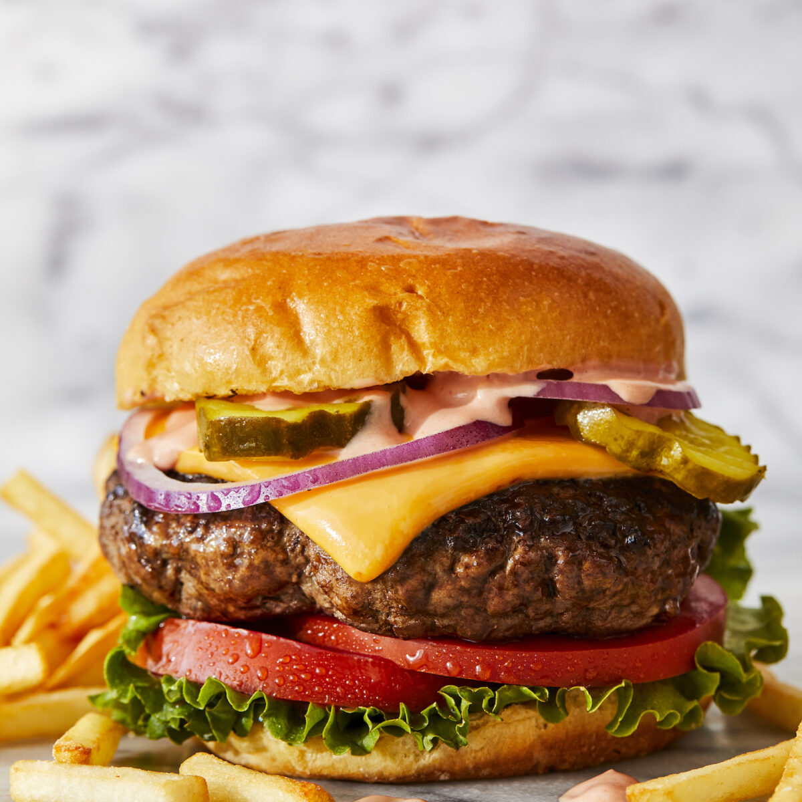

American Cheeseburgers
An American staple at all holiday celebrations, especially their 4th of July, Labor Day, and Memorial Day BBQs. This sandwich comes in many varieties, but carries the same basic ingredients. This recipe will provide exactly what you need for throwing that perfect holiday celebration in your backyard.

| Ingredients | |
|---|---|
| - | 1/2 cup mayonnaise |
| - | 1/4 cup ketchup |
| - | 3 tablespoons dill pickle relish |
| - | 1 tablespoon Dijon mustard |
| - | 2 pounds ground beef, 80/20 |
| - | Kosher salt and freshly ground black pepper, to taste |
| - | 1 tablespoon canola oil |
| - | 6 slices American cheese |
| For Serving | |
|---|---|
| - | Brioche hamburger buns, homemade or store-bought |
| - | Romaine or shredded lettuce |
| - | Sliced tomato |
| - | Sliced red onion |
| - | Dill pickle chips |
| Recipe | |
|---|---|
| 1 | BURGER SAUCE: In a small bowl, whisk together mayonnaise, ketchup, dill pickle relish and Dijon; set aside. |
| 2 | In a large bowl, combine beef, 1 1/2 teaspoons salt and 1 1/2 teaspoons pepper. Using a wooden spoon or clean hands, stir until well combined. Gently form into 6 1-inch-thick patties, about the size of the hamburger buns. |
| 3 | Heat canola oil in a large cast iron skillet over medium high heat. Add patties and cook until lightly charred or until desired doneness, about 3-5 minutes per side; top with cheese. |
| 4 | Serve immediately in hamburger buns with BURGER SAUCE and desired toppings. |
German Schniztel
One of the many staples of German cuisine is the Pork Schnitzel. It is a pounded, breaded and fried cutlet, more often made of pork than of veal. Restaurants mostly serve it with a slice of lemon and french fries.

| Ingredients | |
|---|---|
| - | 4 boneless pork steaks or chops, (to make Austrian Wienerschnitzel use thin veal cutlets) |
| - | salt and freshly ground black pepper |
| - | 1/2 cup all-purpose flour combined with 1 teaspoon salt |
| - | 2 large eggs, lightly beaten |
| - | 3/4 cup plain breadcrumbs |
| - | Oil for frying (use a neutral-tasting oil with a high smoke point) |
| Recipe | |
|---|---|
| 1 | Place the pork chops between two sheets of plastic wrap and pound them until just 1/4 inch thick with the flat side of a meat tenderizer. Lightly season both sides with salt and freshly ground black pepper. |
| 2 | Place the flour mixture, egg, and breadcrumbs in 3 separate shallow bowls. Dip the chops in the flour, the egg, and the breadcrumbs, coating both sides and all edges at each stage. Be careful not to press the breadcrumbs into the meat. Gently shake off the excess crumbs. Don't let the schnitzel sit in the coating or they will not be as crispy once fried - fry immediately. |
| 3 | Make sure the cooking oil is hot enough at this point (about 330 degrees F) as you don't want the Schnitzel to sit around in the coating before frying. Use enough oil so that the Schnitzels "swim" in it. |
| 4 | Fry the Schnitzel for about 2-3 minutes on both sides until a deep golden brown. Transfer briefly to a plate lined with paper towels. |
| 5 | Serve immediately with slices of fresh lemon and parsley sprigs or with your choice of sauce. Serve with German Spaetzle (see recipe for Homemade German Spaetzle), French fries, or German potato salad, and with a fresh leafy green salad. |